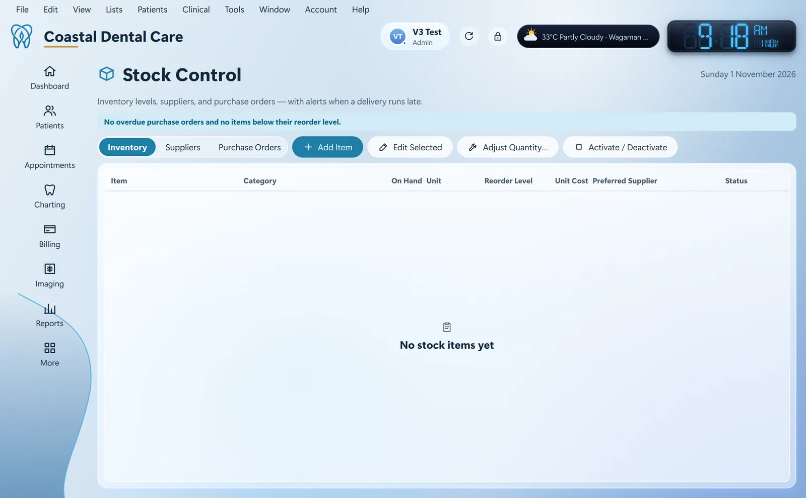
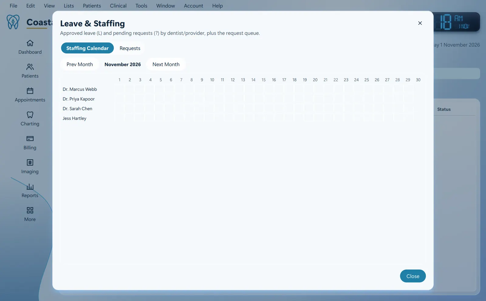
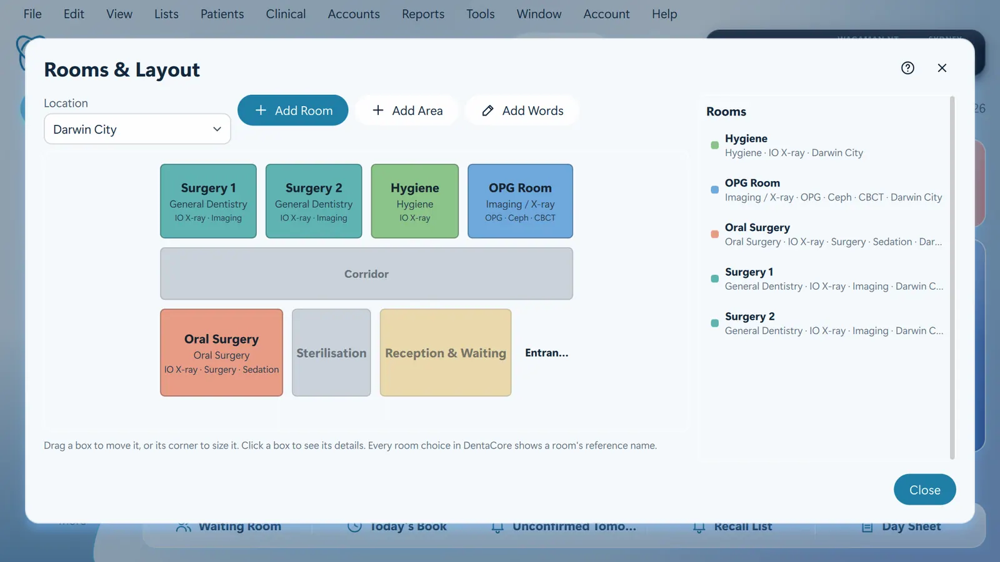
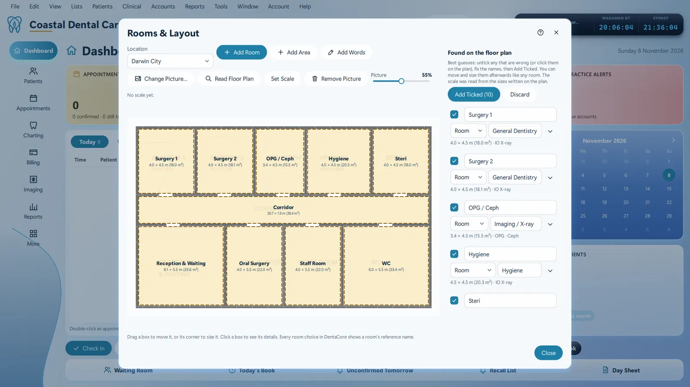
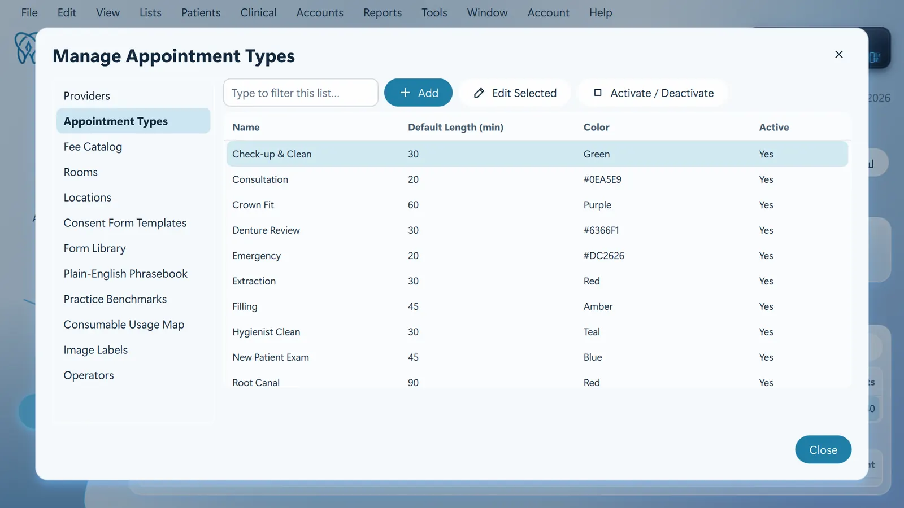
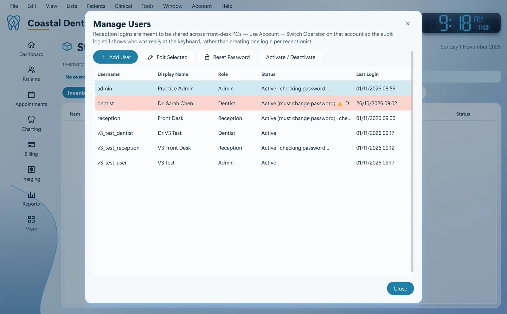
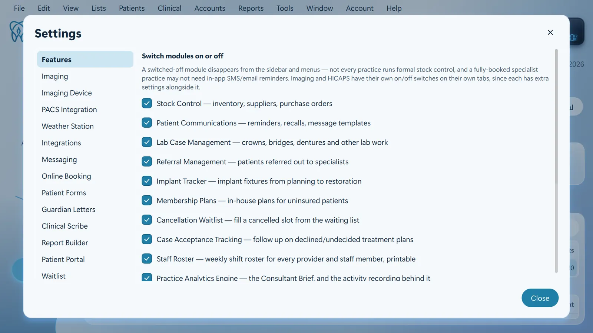
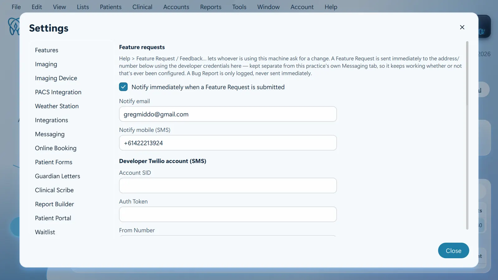

01 / 08 · Stock, staff & rooms
Stock control and purchase orders
More → Stock Control
Keep consumables in stock without counting shelves every week.
- Every item with its quantity on hand and reorder level.
- Adjust Quantity with a reason, so every change is explained.
- Suppliers, and purchase orders with their lines and costs.
- Mark Received books the delivery into stock automatically.
- Low stock shows on the Dashboard's alerts.
- Print an order as a PDF to send the supplier.

02 / 08 · Stock, staff & rooms
Roster and leave
Tools → Staff Roster · Leave & Staffing Calendar
Plan who's working, and approve leave without clashes.
- A week-at-a-glance staff roster, printable.
- Dentists request their own leave.
- The Leave & Staffing Calendar shows approved and pending leave by day, with Approve and Decline.
- A shift that clashes with leave asks first.

03 / 08 · Stock, staff & rooms
Rooms on the floor plan
Lists → Rooms & Layout
Draw the practice's rooms where they really are, with everything about each one.
- Add rooms and areas (reception, sterilisation, corridors) and drag and size them on a grid.
- Each room's name, main use, colour, number of chairs, the computer in it, its equipment and notes.
- What each room can do: intraoral X-ray, OPG, CBCT, imaging, surgical set-up, sedation, wheelchair access.
- A plan for each location.
- Rooms are never deleted, so old appointments keep theirs.

04 / 08 · Stock, staff & rooms
Start from your real floor plan
Rooms & Layout → Read Floor Plan
Drop in the architect's drawing and DentaCore finds the rooms for you.
- Use a picture, a scan or the first page of a PDF behind the plan.
- Read Floor Plan finds the spaces closed in by walls, reads the names written in them and any sizes such as 4.0 x 4.5 m.
- Each one is suggested as a room or an area, with its main use and what it can do, to tick and add.
- Set Scale from two points a known distance apart, and every box shows its size in metres.
- The plan is read on your own computer and never sent anywhere.

05 / 08 · Stock, staff & rooms
The practice's lists
Lists menu
The reference lists every screen draws from.
- Providers with their title, colour on the book and location.
- Appointment types with their length, colour and the room they need.
- The fee catalog, consent form templates, the form library, image labels and capture layouts.
- Import patients from a legacy system.

06 / 08 · Stock, staff & rooms
Users and operators
Account → Manage Users
Create a login for each person, with the right role.
- Username, display name, role and first password.
- Link a dentist's login to their provider entry, and give each person a home location.
- Reset a forgotten password.
- Deactivate a login without losing the person's history.
- The last Admin can't be deactivated, so the practice can never lock itself out.

07 / 08 · Stock, staff & rooms
Settings and modules
Tools → Settings
Switch whole modules on or off so DentaCore fits the practice.
- Stock Control, Communications, Lab Cases, Referrals, Implants, Membership Plans, Waitlist and Case Acceptance each have their own switch.
- Planned Next Visit, Visit Workflow and Capture Timepoints are off until you want them.
- Online Booking, Intake Forms, the Patient Portal, Waitlist claim links and the Scribe each have their own tab.
- A switched-off module disappears from the menus entirely.
- Practice details, ABN and GST registration, practice type and slot length in Practice Settings.

08 / 08 · Stock, staff & rooms
Software updates
Settings → Developer & Updates
DentaCore checks for updates and installs them from inside the app.
- Check for Updates any time, or automatically at start-up.
- Install when convenient; DentaCore restarts to finish.
- Feature requests from staff go to the people who build DentaCore.
